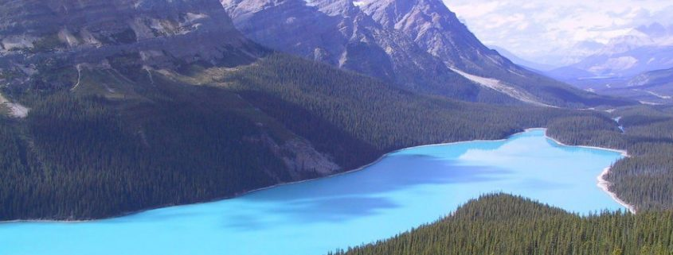
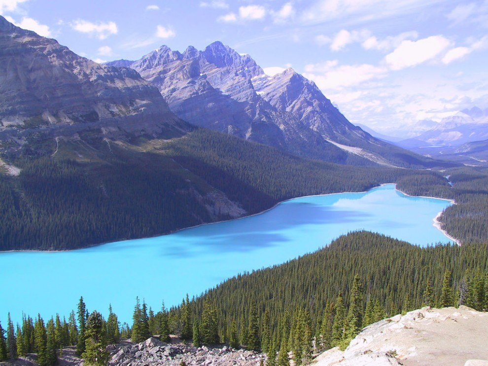
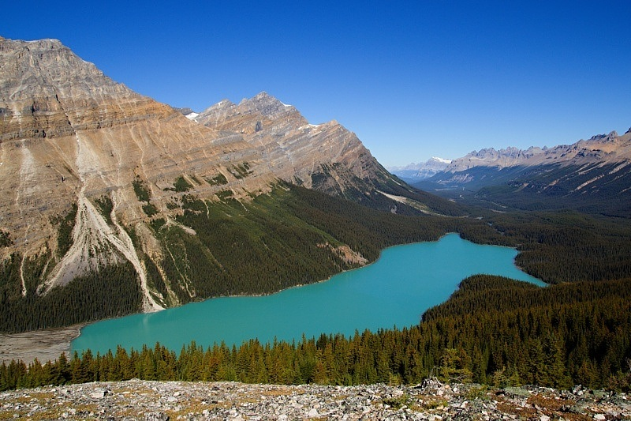
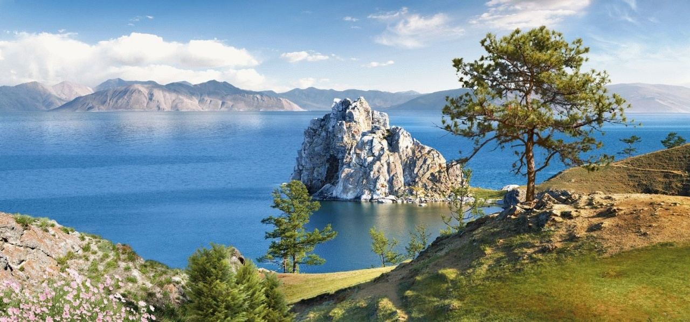
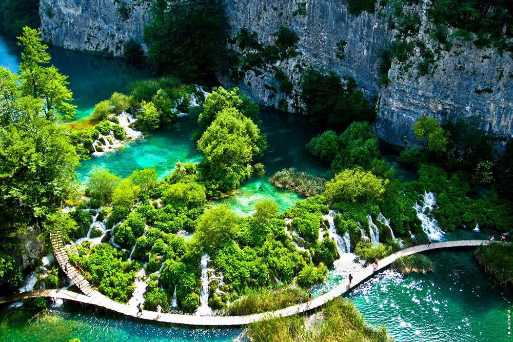
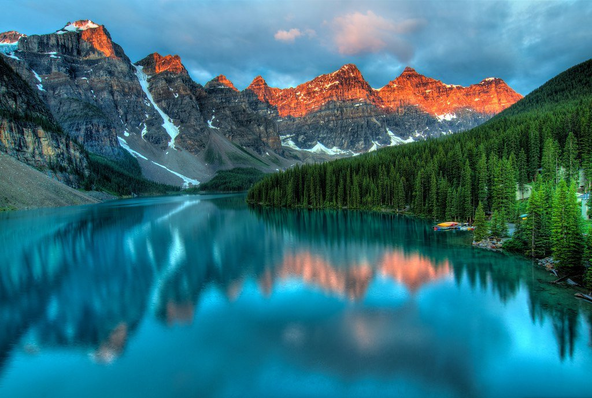

Природа всегда положительно влияет на душевное равновесие человека, она радует глаз и манит его к себе. Она вселяет в душу какой-то комфорт и равновесие. А глядя на воду это состояние души остаётся надолго. Озёра планеты – олицетворение ясности и спокойствия. А красивые озёра – подарок богов, посланный людям для наслаждения этой красотой. Необходимо рассмотреть самые красивые озёра мира, чтобы понимать, куда стоит ехать для получения душевного спокойствия на долгое время. Все озёра по-своему красивы и будет, наверное, неправильно выстраивать их по местам рейтинга.

Озеро Пейто
Озеро Пейто названо в честь его первооткрывателя, которого звали Билл Пейтон. Находится оно в Канаде. Его воды постоянно пополняются, впадающими в него небольшими речушками, которые берут своё начало среди скал Канады, а точнее в Национальном парке Банф. Там расположен ледник, вот отсюда и идёт подпитка озера Пейто. Пейзажи и красота данного озера просто зачаровывают, поэтому это озеро считается наиболее фотографируемым.

Озеро Байкал
Озеро Байкал славится своей красотой. Оно признано наиболее глубоким озером на планете. Максимальная глубина его вод – 1637 метров, а его средняя глубина – 730 метров. Это старейшее озеро мира входит в десятку озёр мира по своей величине. За все эти показатели озеро Байкал внесено в список мирового природного наследия ЮНЕСКО.

Плитвицкие озера
Плитвицкие озера, которые расположены в Хорватии, представляют собой 16 красивейших озёр. Все они между собой разделены дамбами, которые создала сама же природа. Но на этом она не остановилась и соединила эти озёра между собой водопадами. Высота самого высокого из них составляет 70 метров. Различные представители фауны и флоры отлично чувствуют себя в прериях Плитвицких озёр. Для гостей здешних мест построены три комфортабельных отеля, проводятся экскурсии. Любители активного отдыха могут поселиться в этих местах в палатке. Можно часами ходить по туристическим маршрутам и пешеходным тропам, наслаждаясь великими красотами Плитвицких озёр.

Озеро Морейн
Озеро Морейн расположилось в Национальном парке Банф, как и озеро Пейто. Место его расположения — долина 10 пиков. Питается озеро ледником. Окружающие его горы отражаются в невероятно синей воде. Находясь здесь, человек понимает, что такие места на земле – действительно подарки богов. И только медведи гризли своим присутствием мешают туристам наслаждаться божественными пейзажами. Поэтому иногда из-за активности медведей прогулочные маршруты перекрывают.

Озеро Крейтер
Множеством гор и утёсов окружено озеро Крейтер, расположенное в США к югу от Орегона. И этот фактор делает здешние места ещё более захватывающими. Озеро Крейтер не имеет никаких истоков и притоков. А из-за отсутствия каких-либо загрязнений это озеро помимо своей красоты является ещё и наиболее чистым на планете.
